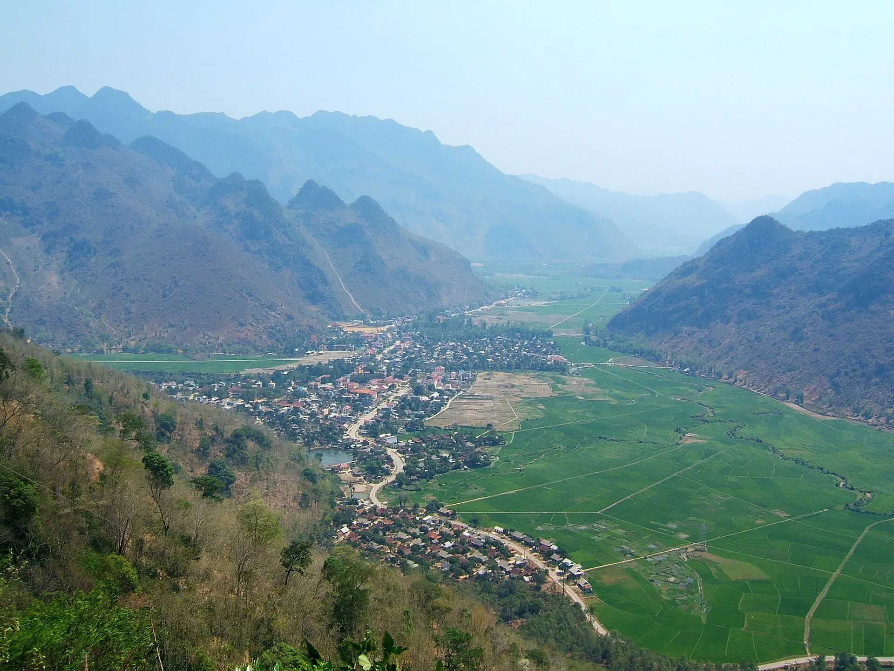

コムラム（竹筒ご飯）
山のもち米を竹筒で焼き、ごま塩をつけて。

ハノイから約 140 km のマイチャウ渓谷には、ラック村やポムコン村などターイ族の村が石灰岩の山に囲まれた田んぼの中にあります。田んぼを自転車で走り、高床式の家に泊まり、ソエの踊りを見て、竹筒ご飯や川魚を味わうのが楽しみ。週末旅行や、モクチャウ・プールオンへ向かう途中の立ち寄りにぴったりです。
天気を読み込み中...
月を押すと旅行に適した時期か確認できます
山のもち米を竹筒で焼き、ごま塩をつけて。
マックケン山椒をまぶした川魚を竹に挟んで炭火で。
イメージ写真: 焼き魚はちみつを塗って焼いた放し飼いの鶏――皮はパリッと身は締まって。
イメージ写真: 丸鶏の炭火焼きBamboo rice, stream fish, wild greens
Bản Lác, Mai Châu 更新 2026/10 誤りを報告Grilled hill chicken, local pork
Bản Pom Coọng, Mai Châu 更新 2026/10 誤りを報告Sticky rice, snacks and brocade
Thị trấn Mai Châu 更新 2026/10 誤りを報告Grilled local pork with upland sticky rice
Bản Lác, Mai Châu 更新 2026/10 誤りを報告Five-colour sticky rice and bamboo rice
Thị trấn Mai Châu 更新 2026/10 誤りを報告Pho and noodle soup for breakfast
Thị trấn Mai Châu 更新 2026/10 誤りを報告Lake-fish hotpot and grilled fish
Thung Nai, Cao Phong 更新 2026/10 誤りを報告H'Mong horse stew and steamed corn
Hang Kia, Mai Châu 更新 2026/10 誤りを報告1 人あたりの目安料金。住所を押すと Google マップで営業時間と最新の口コミを確認できます。
田んぼの小道を走り、機織りを見学。
高台から渓谷を一望できる休憩スポット。
1,000 段以上の石段を登ってマイチャウの田園を見下ろす。
夜のターイ族の民俗芸能とカン酒。
この旅行先と月に合わせたおすすめです（旅程セクションで出発日を選ぶと月が変わります）。準備したものにチェックを入れておきましょう。
料金や営業時間の変更、閉店したお店を見つけましたか？ 誤りを報告
200k–600k / 泊
Thai stilt houses among the rice fields.
350k–900k / 泊
Handy for buses and the market.
1.5M–4M / 泊
Pools overlooking paddies and mountains.
Bus or limousine from Hanoi ~3.5 h (140 km) via the Thang Long boulevard and Hoa Binh, frequent departures from My Dinh station.
| ハノイから |
|
|---|---|
| ダナンから |
|
| ホーチミン市から |
|
移動時間の目安、1 人片道の節約プラン料金――参考値です。太字がおすすめの方法です。
2 名 1 泊の目安の部屋料金で、テト（旧正月）、祝日、週末は高くなります。Việt Travel は予約サイトから手数料を受け取っていません。
Việt Travel · フート（旧ホアビン） · ベストシーズン: 3月 – 5月、9月 – 10月
Drive ~3.5 h from Hanoi, stopping at Thung Khe pass for valley views.
Check into a stilt house in Lac village, walk the paddies and watch brocade weaving.
Bamboo rice, grilled stream fish and xoe dancing by the fire.
少し夜の散歩をしてから宿で休む
Cycle through the rice fields to Pom Coong village.
Climb the steps to Chieu cave above the Mai Chau fields.
Tube wine and Thai folk songs.
少し夜の散歩をしてから宿で休む
Swim in a stream and lunch with a Thai family.
Honey-grilled hill chicken.
少し夜の散歩をしてから宿で休む
ツアー終了：チェックアウトし、お土産を買って帰路へ。
宿で朝食（宿泊料金に含まれることが多い）
Drive up to the H'Mong villages of Hang Kia – Pa Co.
Trek the plum hills and watch clouds roll over Pa Co.
Back to Lac village for the night.
少し夜の散歩をしてから宿で休む
ツアー終了：チェックアウトし、お土産を買って帰路へ。
宿の近くの地元客でにぎわう食堂で朝食
A boat on Hoa Binh lake and a visit to Thac Bo temple.
Arrive in Hanoi.
ツアー終了：チェックアウトし、お土産を買って帰路へ。
内訳：予算
内訳：快適
内訳：予算
内訳：快適
内訳：予算
内訳：快適
マイチャウ渓谷までの航空券・交通費は含みません。目安の料金で季節により変わります。
複数の場所を回りますか？マイチャウ渓谷をほかの旅行先と組み合わせましょう。
体験を共有
読者の写真
まだ写真がありません。マイチャウ渓谷での思い出を最初に共有しませんか？
写真を投稿する